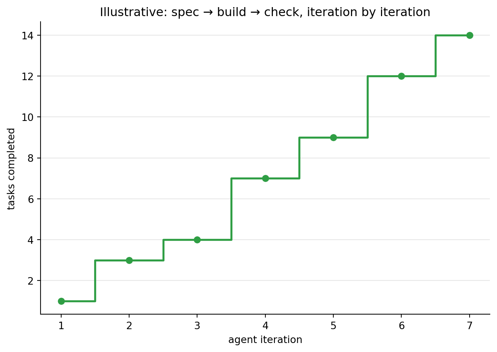

Session 4 · de-code agentic coding
Democratizing Coding with AI — Thu 8 Oct
Topics
1 Safety first!
1.1 From chat to agents
A language model such as Gemini works by predicting the next word, over and over, based on everything written so far. In a chat, that produces an answer — but only text: you copy the code, run it, and paste back the result.
An AI agent adds two things:
- Tools — functions the model can call to act outside the chat: read and write files, search a folder, run a command in a terminal, look something up on the web.
- A loop — the agent plans a step, calls a tool, reads the result, and decides the next step, until the task is done or it needs your input.
That makes agents powerful: you describe the goal, and the agent does the work in a folder on your computer. It also makes them risky: a tool that can write a file can overwrite one, and a tool that can run a command can delete things. So we start with safety.
1.2 Common agent tools
Most coding agents — Antigravity included — offer a similar set of tools. The last column is a rough guide to how much damage a mistake could do.
| Tool | What it does | Example | Risk |
|---|---|---|---|
| Read file | Reads the contents of a file | read ANALYSIS-SPEC.md |
low |
| List / find files | Lists folders or finds files by name | find all *.csv files |
low |
| Search in files | Finds text inside files | where is DV_INDEX used? |
low |
| Create / write file | Creates a new file or replaces one | write app.py |
medium — can overwrite |
| Edit file | Changes part of an existing file | rename a variable in app.py |
medium |
| Run terminal command | Runs a command in a shell | quarto render report.qmd |
high — can do anything you can |
| Web search | Searches the internet | “Gradio slider example” | low — but results can be wrong |
| Fetch web page | Downloads a page or file | read a library’s documentation | low–medium |
| Ask the user | Pauses and asks you a question | “Which column is the outcome?” | none — this is a good sign |
| Plan / to-do list | Writes and updates its own task list | 1. load data 2. describe … | none |
Reading is safe; writing, editing and running commands are where you want guardrails.
1.3 AGENTS.md: rules the agent reads first
An AGENTS.md file is a plain Markdown file of standing instructions. The agent reads it at the start of every conversation, before your prompt, so the rules apply without you repeating them. Put one in a project folder for that project; Antigravity also reads global rules from ~/.gemini/AGENTS.md (or GEMINI.md) for all your projects.
Here is a real example, used while building this course. It stores the text; save it as AGENTS.md in your project folder.
agents_md = """
## Local Python Environment
This repository uses the Python virtual environment:
~/lib/python/uv-osm
---
### Environment Activation
When running any Python-related command (python, pytest, quarto render with python, etc.),
ALWAYS prefix the command with:
source ~/lib/python/uv-osm/bin/activate && <command>
If multiple commands are needed, prefer a single bash -lc invocation that activates once and runs all steps.
---
### Package Management Policy (IMPORTANT)
This environment uses **uv** for dependency management.
DO NOT install, upgrade, or remove any Python packages without explicitly asking first.
If a dependency is required:
1. Explain why the package is needed.
2. Confirm with the user.
3. Install it using:
source ~/lib/python/uv-osm/bin/activate && uv pip install <package>
Rules:
- Prefer `uv pip install` over `pip install`.
- Never use plain `pip install`.
- Never install packages globally.
- Never modify requirements files or pyproject.toml without confirmation.
- If a package is missing, check first before proposing installation.
---
### File System Safety Policy (IMPORTANT)
You may read and inspect files anywhere.
You may create, modify, or delete files ONLY inside:
/tmp/
~/tmp/
This includes any subdirectory under /tmp/ or ~/tmp/ (e.g., /tmp/project/, /tmp/test/output.txt, ~/tmp/project/).
You must NEVER modify files outside /tmp/ or ~/tmp/ without explicit confirmation.
If changes to project files are required:
1. Write the proposed version to /tmp/ or ~/tmp/.
2. Show or explain the changes.
3. Ask for approval before modifying the original file.
Treat everything outside /tmp/ and ~/tmp/ as read-only unless explicitly approved.
"""
with open("AGENTS.md", "w") as f:
f.write(agents_md)The file has three policies, each closing a typical risk:
- Environment: always use one specific Python environment, so the agent does not run code with the wrong setup.
- Packages: never install or remove software without asking first — installs change your computer beyond the project.
- File system: read anything, but write only in scratch folders; changes to real files are proposed first and need your approval.
Note the style: short, direct, with the important parts marked IMPORTANT and concrete examples. Write rules the way you would brief a new colleague.
1.4 Other guardrails
Rules are one layer. Combine them with these:
- Approve actions. By default the agent asks before writing files or running commands. Keep it that way; never start it with
--dangerously-skip-permissions. - Plan first. In plan mode (
/plan, oragy --mode plan) the agent only investigates and proposes a plan; nothing changes until you approve it. - Use the sandbox.
agy --sandboxrestricts what terminal commands can reach. - Work in a copy. Give the agent a project folder with copies of your data, never the only copy.
- Keep checkpoints. Version control (git) or the agent’s own
/rewindlets you go back;/diffshows exactly what changed. - No secrets. Keep passwords, API keys and personal data out of the project folder.
# Start the CLI agent in a project folder, in plan mode, inside the sandbox
!cd ~/projects/komp014-analysis && agy --mode plan --sandbox1.5 Choosing a model
An agent can run on different models, and you can switch between them. The trade-off is always speed and cost against capability:
| Model family | Good for | Note |
|---|---|---|
| Gemini Flash (low / medium / high) | everyday tasks, quick edits, most course work | fast and cheap; start here |
| Gemini Pro | harder problems, bigger plans, tricky bugs | slower, uses more quota |
| Claude (Sonnet, Opus) | a second opinion, long careful reasoning | also available in Antigravity |
| GPT-OSS | an open-weight alternative | useful for comparison |
The effort level (low to max) sets how long the model thinks before acting: more effort helps on hard tasks and wastes time on easy ones. Switch with /model and /effort, or ask another model once without switching: /model <name> <prompt>. In the CLI, agy models lists what your account can use.
1.6 Tokens and the context window
Models read and write tokens — pieces of words, roughly ¾ of a word each. Everything the agent sees counts: your prompt, AGENTS.md, every file it reads, every command output, and its own replies. All of it must fit in the model’s context window, its working memory.
When a long conversation fills the window, the agent compacts it — it replaces older parts with a summary — and details can get lost. Tokens also cost quota.
- Check usage with
/context(what fills the window),/usageand/quota. - Point the agent to the files it needs instead of letting it read everything.
- Keep
AGENTS.mdand specs short; they are read at every turn. - Start a new conversation for a new task instead of continuing a very long one.
1.7 Slash commands
In the agent’s chat box, commands that start with / control the agent itself instead of being sent as a prompt. Ten useful ones:
| Command | What it does |
|---|---|
/help |
Lists commands and keyboard shortcuts |
/plan |
Plan mode: investigate and propose, change nothing yet |
/grill-me |
The agent interviews you about your idea, one question at a time |
/model |
Shows or switches the model (/model <name>) |
/effort |
Sets how hard the model thinks (low to max) |
/context |
Shows what fills the context window |
/usage |
Shows token use and remaining quota |
/diff |
Shows the changes the agent made |
/rewind |
Goes back to an earlier point, undoing changes |
/resume |
Continues an earlier conversation |
/grill-me is especially useful before building an app. Instead of guessing what you mean, the agent asks you question after question — who uses the app, which data, what counts as done — until the idea is clear. Combine it with plan mode, and end by asking for a spec:
grill_prompt = """
/plan /grill-me I want a small app that shows word clouds and sentence sentiment for
the text files in this folder. When you have no more questions, write the result as
APP-SPEC.md with purpose, data, features, constraints and acceptance checks.
"""2 Google Antigravity
2.1 Three ways to work with the same agent
Google Antigravity is Google’s agentic coding platform. It comes in three products that put the same kind of agent behind different interfaces. All three sign in with a Google account and are downloaded from antigravity.google.
| Product | What you see | Suits | Start it with |
|---|---|---|---|
| Antigravity app | A desktop app for managing agents, plans and results | beginners; working without reading code | the app icon |
| Antigravity IDE | A code editor with the agent built in | reviewing code and edits closely | the app icon, or antigravity-ide |
| Antigravity CLI | The agent in a terminal window | quick tasks, scripts, remote computers | agy |
2.2 The Antigravity app
The desktop app is the most beginner-friendly: an agent manager. You open a project, describe what you want, and the agent works on it while you follow its plan, its steps and the results — documents, plans and screenshots it calls artifacts. You can run several conversations side by side and review what changed, without ever opening a code editor.
2.3 The Antigravity IDE
The IDE is a full code editor with the agent built in, in the style of Visual Studio Code. The files sit on the left, the code in the middle and the agent in a side panel. You see each edit the agent makes in context and can accept, change or reject it line by line — the best choice once you want to understand and steer the code itself.
2.4 The Antigravity CLI
The CLI, agy, runs the agent in a terminal. It has the same tools, rules and slash commands, in a text interface. It starts fast, works on remote computers over SSH, and can run single prompts from scripts.
# Interactive session in the current folder
!agy
# Safer starts: plan mode, sandboxed terminal, a chosen model and effort
!agy --mode plan --sandbox --model gemini-3.1-pro-high --effort high
# One prompt, no conversation: prints the answer and exits
!agy -p "Summarise ANALYSIS-SPEC.md in three bullet points"
# Continue the most recent conversation, list available models, update the CLI
!agy -c
!agy models
!agy updateThe commands are written with ! so they could run from a notebook; in a normal terminal, leave the ! out. In Colab they do not work — the CLI runs on your own computer.
2.5 Create a project
Agents work in a project folder (the workspace). Everything the agent may touch lives there, so make a fresh one for each task:
komp014-analysis/
├── AGENTS.md rules: environment, packages, where it may write
└── ANALYSIS-SPEC.md the task: data, analyses, output- Create an empty folder, for example
komp014-analysis. - Save
AGENTS.md(section 1.3) andANALYSIS-SPEC.md(next section) in it. - Open the folder in the Antigravity app or IDE and confirm that you trust it — or open a terminal in the folder and run
agy.
2.6 Run the data analysis spec
This is the same specification as the recap in session 2. Run the cell in Colab to save it as ANALYSIS-SPEC.md, download it, and put it in the project folder.
analysis_spec = """
# Analysis spec: komp014 toy dataset
## Data
- URL: https://raw.githubusercontent.com/nils-holmberg/de-code/main/csv/komp014-simulated-data-n100.tsv
(tab-separated, 100 rows, no missing values)
- IV_CAT_GROUP: category1 / category2
- Six items 1-5: IV1_ITEM1, IV1_ITEM2, IV2_ITEM1, IV2_ITEM2, DV_ITEM1, DV_ITEM2
- Indices = item means: IV_INDEX1, IV_INDEX2, DV_INDEX (outcome)
## Analyses
1. Load: check rows, columns and missing values.
2. Describe: descriptives with skew and kurtosis for all numeric variables;
frequencies of IV_CAT_GROUP and the six items.
3. Visualise: histogram with density curve per numeric variable;
bar chart of IV_CAT_GROUP.
4. Relate DV_INDEX to each predictor: group means and SDs; Pearson correlations;
box plot by group; scatter plots with fitted lines.
5. Test: Welch t-test with Cohen's d for the group; Pearson r with p for each index.
## Output
- One file, komp014-analysis.qmd, with Python code cells (pandas, seaborn, scipy).
- One section per analysis step, each result followed by a short plain-language
interpretation.
- It must render with `quarto render komp014-analysis.qmd` without errors.
"""
with open("ANALYSIS-SPEC.md", "w") as f:
f.write(analysis_spec)Then give the agent a short prompt — the details are in the spec. Start in plan mode, read the plan, and approve it:
run_prompt = """
/plan Read AGENTS.md and ANALYSIS-SPEC.md. Follow the spec step by step: write
komp014-analysis.qmd, render it with quarto, and fix any errors. Finally report Cohen's d
for the group difference and Pearson's r for both indices.
"""
# The same as a single command in the CLI
!agy --mode plan -p "Read AGENTS.md and ANALYSIS-SPEC.md and follow the spec."Check the agent’s numbers against session 1: Cohen’s d ≈ 0.58 and r ≈ .41 for both indices. If they differ, ask the agent why — and decide who is right.
3 Write an app spec
3.1 A basic app spec
A useful app spec has the same parts as in session 3, kept short: purpose, data, features, constraints and acceptance checks. The two examples below add one new constraint: the app must run inside a Jupyter notebook, so it works in Colab and in the Antigravity IDE alike.
Both use Gradio, a Python package that builds a small web interface — uploads, sliders, images, tables — and shows it directly in the notebook with demo.launch(). The specs are stored in cells; run them in Colab to save each as a file for the agent.
3.2 An NLP app: word cloud and sentence sentiment
Natural language processing (NLP) apps turn text into something you can see and count. This one cleans and tokenises text files with spaCy, draws a word cloud for each file, and scores the sentiment of every sentence. spaCy has no sentiment model of its own, so the spec names one: NLTK’s VADER, which works well on short English sentences.
nlp_spec = """
# SPEC: Text explorer (word cloud and sentence sentiment)
## 1. Purpose
Explore a folder of English text files: which words dominate each text, and how
positive or negative each sentence is.
## 2. Data
- Read every *.txt file in the current working folder (UTF-8).
- If there are none, first create three short sample files (a review, a news item,
a diary entry; 5-8 sentences each) so the app always has something to show.
## 3. Processing
- spaCy with en_core_web_sm: split each text into sentences; tokenise and lemmatise;
keep lowercase alphabetic lemmas; drop stop words, punctuation, numbers and spaces.
- Word cloud (wordcloud package) from the cleaned lemmas, per file and for all files.
- Sentiment per sentence with NLTK VADER (SentimentIntensityAnalyzer): the compound
score from -1 to 1, and a label: positive >= 0.05, negative <= -0.05, else neutral.
## 4. Interface (Gradio, shown in the notebook)
- A dropdown with "All files" and each file name.
- The word cloud image for the selection.
- A table: file, sentence number, sentence, compound score, label.
- A short summary line: number of sentences and share positive / neutral / negative.
- A button to download the table as CSV.
## 5. Constraints
- One notebook cell that installs what is missing, then builds and launches the app:
%pip install spacy wordcloud nltk gradio
python -m spacy download en_core_web_sm
- Download the VADER lexicon with nltk.download("vader_lexicon").
- Run with demo.launch() so the interface appears below the cell.
## 6. Acceptance checks
- A1 With no text files present, three sample files are created and shown.
- A2 Each word cloud contains no stop words such as "the", "and" or "is".
- A3 The table has one row per sentence; scores lie between -1 and 1.
- A4 Choosing a file updates the word cloud, table and summary.
- A5 The downloaded CSV has the same rows as the table.
"""
with open("NLP-APP-SPEC.md", "w") as f:
f.write(nlp_spec)nlp_prompt = """
Read AGENTS.md and NLP-APP-SPEC.md. Plan first, then write the app as one Jupyter
notebook cell in text_explorer.ipynb, run it, and check every acceptance criterion.
"""3.3 A computer vision app: edge detection
Computer vision apps work on images. Edge detection finds the outlines in a picture — where brightness changes sharply — and is a classic first step before recognising shapes or objects. This spec uses OpenCV and the Canny edge detector, with two sliders so you can see how its thresholds change the result.
cv_spec = """
# SPEC: Edge detector
## 1. Purpose
Show how edge detection works: upload a picture, adjust two thresholds, and see the
edges appear.
## 2. Input
- An image uploaded by the user (JPG or PNG).
- If none is uploaded, a sample image drawn in code (shapes and text on a gradient),
so the app works without any files.
## 3. Processing (OpenCV)
1. Convert to grayscale.
2. Smooth with a Gaussian blur (kernel size from a slider: 1, 3, 5 or 7).
3. Canny edge detection with a low and a high threshold (sliders, 0-255).
4. Optionally draw the edges in colour on top of the original image.
## 4. Interface (Gradio, shown in the notebook)
- Image upload, three sliders (blur, low threshold, high threshold), an overlay checkbox.
- The original and the edge image side by side, updated when a slider moves.
- The share of edge pixels shown as a percentage.
- A button to download the edge image as PNG.
## 5. Constraints
- One notebook cell: %pip install opencv-python-headless gradio
- Use opencv-python-headless (no desktop windows) so it runs in Colab.
- Run with demo.launch() so the interface appears below the cell.
## 6. Acceptance checks
- A1 Without an upload, the sample image and its edges are shown.
- A2 Raising the low threshold gives fewer edge pixels.
- A3 If the low threshold is above the high one, the app explains the problem instead
of failing.
- A4 The downloaded PNG matches the edge image shown.
"""
with open("CV-APP-SPEC.md", "w") as f:
f.write(cv_spec)cv_prompt = """
Read AGENTS.md and CV-APP-SPEC.md. Plan first, then write the app as one Jupyter
notebook cell in edge_detector.ipynb, run it, and check every acceptance criterion.
"""3.4 Your turn
Pick one of the two specs and make it yours:
- Change one feature — for example word clouds by sentence sentiment, or a second edge detector (Sobel) to compare with Canny.
- Add an acceptance check for the new feature.
- Give the spec to an Antigravity agent in a fresh project folder, in plan mode.
- Test the app against every acceptance check. When something fails, improve the spec and run the agent again.